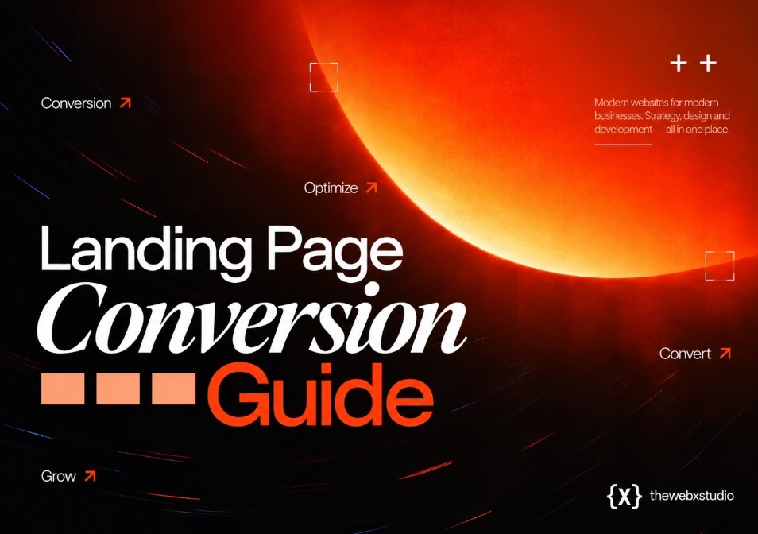

How to increase your landing page conversion rate
More traffic is the expensive way to grow. A higher landing page conversion rate is the cheap way — it turns visitors you’ve already paid for into customers you haven’t billed yet.

Conversion rate optimisation gets treated like a bag of party tricks — change the button colour, add an exclamation mark, cross your fingers. It isn’t that, and treating it that way is why most CRO efforts stall after one round of tweaks. A landing page either does the one job it was built for, or it doesn’t, and the gap between an average page and a genuinely good one is almost never one big idea. It’s a handful of specific, fixable leaks, stacked on top of each other, quietly costing you visitors one at a time.
This is a working playbook, not a list of hacks: what a healthy landing page conversion rate actually looks like, how to measure yours without lying to yourself, the leaks that cost the most, a method for deciding what to fix first, and how to test changes without mistaking noise for a result.
Conversion rate optimisation isn’t a redesign — it’s finding the two or three leaks costing you the most visitors, fixing them in the right order, and proving each fix actually worked before you move on.
What counts as a “good” conversion rate
Ignore any single number someone quotes you at a conference. A landing page’s conversion rate depends entirely on what you’re asking a visitor to do, and how qualified they were before they arrived. A cold ad click converts very differently to a link in an email to an existing customer, even on the identical page.
As a rough, defensible guide across most B2B and service businesses, benchmark against your own goal type rather than the internet at large:
| Page goal | Typical range | Where a strong page lands |
|---|---|---|
| Lead generation (quote, consult, demo) | 3–6% | 10%+ |
| Free trial / software signup | 4–7% | 10%+ |
| Webinar or event registration | 5–8% | 12%+ |
| Ecommerce product or category page | 1–3% | 5%+ |
Treat these as a sanity check, not a target. A page pulling 2% from cold, unqualified traffic can still be a huge win if the previous page pulled 0.8%. Improvement relative to your own baseline matters more than beating an industry average that was never measuring your audience in the first place.
How to measure it without fooling yourself
Bad measurement produces confident, wrong decisions. Before you optimise anything, get the number itself right:
- Define one primary conversion event per page — not three competing ones you average together.
- Strip out internal visits, bot traffic and QA clicks before you trust the percentage.
- Split results by traffic source and device. A blended average hides the fact that mobile or paid social is quietly dragging everything down.
- Wait for enough visits, not enough days. A page with fifty visitors doesn’t have a conversion rate yet, it has an anecdote.
- Compare like with like — same offer, same audience, same season — before concluding a change helped or hurt.
The six leaks that quietly drain your conversions
In our own audits, the same handful of problems show up again and again, usually two or three at once on the same page:
- Slow load times. Every extra second before the page becomes usable loses you visitors who never even reach your offer. This is a measurable, fixable metric — we cover the mechanics in our Core Web Vitals guide.
- A weak headline. If a stranger can’t tell what you do and who it’s for within three seconds, the rest of the page never gets read.
- An unclear or competing call to action. Two or three different buttons asking for different things is worse than one clear ask, even a smaller one.
- Too many form fields. Every field beyond the essentials is a small tax on the visitor’s patience, and most of them won’t pay it.
- No visible trust signals. No client names, no proof, no reason to believe you’ll deliver — so the safer choice is to leave.
- Message mismatch. The page doesn’t say what the ad promised, so the visitor assumes they clicked the wrong link and bounces.
Prioritise by impact versus effort, not gut feel
Most teams fix whatever is easiest to fix, or whatever the loudest person in the room dislikes. Neither is a strategy. Score every candidate fix on two axes — how much it’s likely to move the number, and how much work it takes — and start with the top-left quadrant: high impact, low effort.
| Fix | Effort | Typical impact |
|---|---|---|
| Trim the form to 3–4 fields | Low | High |
| Rewrite the headline to match the ad | Low | High |
| Cut to one primary call to action | Low | Medium–High |
| Add specific, named trust signals | Low–Medium | Medium |
| Fix core load speed | Medium–High | High |
| Full visual redesign | High | Medium |
Notice that a full redesign sits at the bottom of that list, not the top. It feels like the obvious move because it’s the most visible, but it’s rarely where the leak actually is. Our own checklist for what belongs on a well-built page is in our landing page best practices guide — worth running your current page against before you commission new design work.
Running an A/B test you can actually trust
A/B testing has a reputation for being scientific, which makes it easy to trust results that aren’t actually valid. Most failed CRO programmes aren’t failing because the ideas are bad — they’re failing because the tests never produced a real answer in the first place.
- Test one variable at a time. Change the headline and the form together, and you’ll never know which one moved the number.
- Set a minimum run time in weeks, not days, so you capture different days of the week and different traffic sources.
- Decide your sample size and significance threshold before you start, not after you like what you see.
- Don’t call a winner early because the early numbers look good — early numbers are usually noise wearing a costume.
- Write down what you tested and what happened, including the losses. A loss that isn’t documented gets tested again in eighteen months.
A test that gets called after three good days isn’t a result — it’s a coin flip you stopped watching too early.
Trust signals and message match: the two most skipped fixes
These two get skipped constantly because neither feels like “design.” A generic line like “trusted by businesses worldwide” convinces nobody. A specific, attributed result — a named client, a real outcome, a genuine review — does far more work in far less space. If you don’t have testimonials yet, security badges, recognisable client logos or a simple guarantee can carry the same weight.
Message match is even cheaper to fix and just as commonly ignored. If your ad promises “free consultation, no obligation,” your headline should say almost exactly that. The moment a visitor has to work out whether they landed in the right place, you’ve already lost a share of them — not because the offer was wrong, but because the page made them think twice.
Where this fits alongside the rest of your site
A landing page is a campaign tool, not a replacement for your homepage, and optimising it in isolation only gets you so far. If you’re unsure whether a given push needs a dedicated page at all, or should simply point at your existing site, our guide to landing page vs website walks through when each one earns its keep. Get that decision right first, then optimise the page you actually built for the job.
Know your leaks are costing you, but not sure which to fix first?
Send us the page. We’ll tell you honestly where the conversions are leaking and what’s worth fixing before you spend another cent on traffic.
Start a project